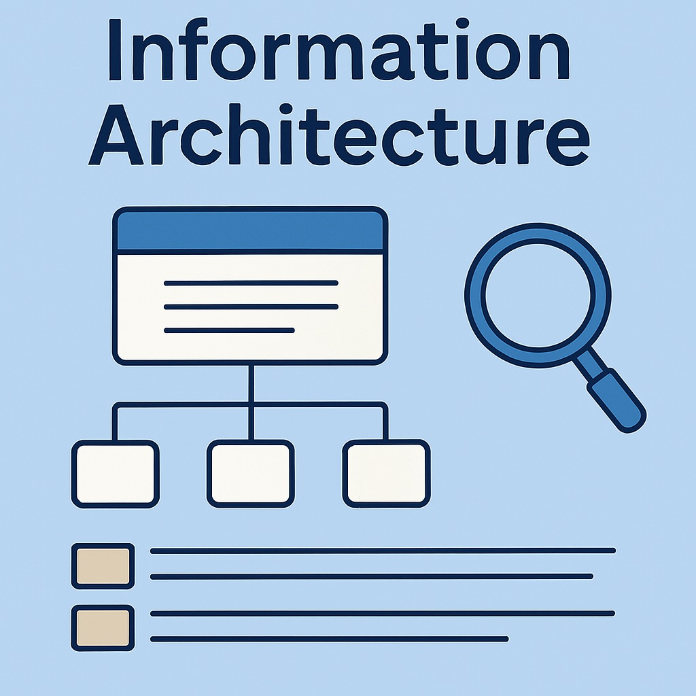
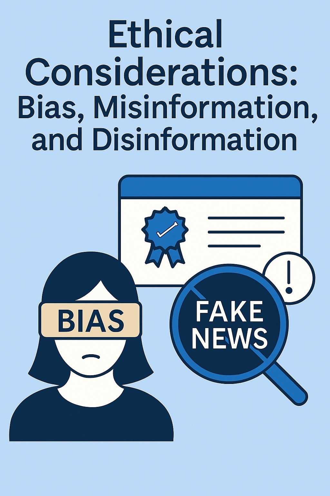

Systems design ensures efficiency, scalability, and adaptability in digital frameworks by integrating structured methodologies and technical strategies.
Key Components
Modular Architecture: Breaking down complex systems into independent, reusable components improves flexibility, reduces dependencies, and streamlines updates.
Risk Mitigation Strategies: Using predictive modeling, real-time monitoring, and rigorous testing protocols to identify potential failures and optimize system performance.
Integration of Emerging Technologies: Implementing IoT, cloud computing, and automation tools to enhance functionality, efficiency, and interconnectivity between systems.
Governance & Lifecycle Management: Aligning system strategies with business objectives ensures effective resource allocation, collaboration, and regulatory compliance.
Scalability and Performance Optimization: Incorporating load balancing, database sharding, and distributed computing to handle high-volume operations and ensure seamless user experiences.
Content and Information Architecture

Images generated with AI assistance
Information architecture focuses on structuring digital content to improve usability, accessibility, and searchability, making navigation intuitive for users.
Key Components
Hierarchical Structuring: Organizing content logically through categories, subcategories, and relationships to enhance content discovery and comprehension.
Metadata & Taxonomy: Utilizing labeling systems and structured classification to improve searchability and indexing across digital platforms.
User-Centered Design: Structuring content based on how users think, search, and interact with information to ensure a seamless experience.
Navigation Optimization: Implementing dynamic menus, filters, and search functionality to enable efficient information retrieval and browsing.
Accessibility Standards: Ensuring digital content is inclusive and adheres to WCAG guidelines for usability among diverse audiences.
User Experience & Visual Design
Images generated with AI assistance
UX and visual design principles focus on creating intuitive, accessible, and visually engaging interfaces that enhance user interactions with digital products.
Key Components
Consistency: Maintaining uniform typography, colors, and layout ensures familiarity and usability across interfaces.
Accessibility: Designing for inclusivity accommodates users with disabilities, using high-contrast elements, adjustable text sizes, and screen reader compatibility.
Intuitive Navigation: Clear, logical pathways for users reduce cognitive load and improve overall engagement.
Visual Hierarchy: Arranging elements in structured formats directs attention to the most critical aspects of a digital interface.
Gestalt Psychology in UX: Applying principles like proximity, similarity, and common fate enhances design perception and information grouping.
Microinteractions & Motion Design: Using subtle animations, button feedback loops, and hover effects to create engaging and responsive experiences.
Ethical Considerations: Bias, Misinformation, and Disinformation

Images generated with AI assistance
Ethical design principles ensure fairness, accuracy, and transparency in digital content, addressing misinformation, privacy concerns, and responsible online behavior.
Key Ethical Considerations
Fact-Checking Mechanisms: Establishing systems to verify information sources, validate credibility, and prevent the spread of misinformation.
Public Awareness Campaigns: Educating users on recognizing misinformation, critically evaluating sources, and responsibly engaging with online content.
Bias in Digital Content: Identifying biases in media, content presentation, and information distribution to promote balanced representation.
Content Moderation: Developing ethical guidelines for removing harmful, misleading, or offensive content while protecting freedom of speech.
Privacy & Data Protection: Safeguarding user data, ensuring transparency in data collection practices, and adhering to digital security regulations.
Media Literacy Programs: Encouraging educational initiatives to help users critically assess digital content, advertisements, and social media narratives.